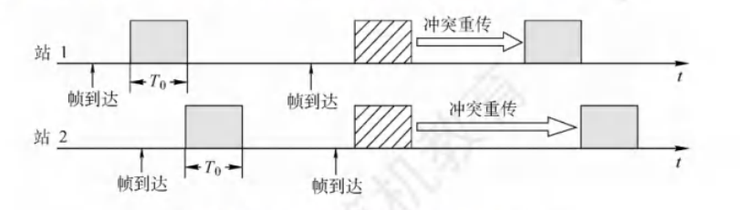

数据链路层概述
数据链路层使用的信道主要有两种：
- 点对点信道，使用一对一的通信方式。PPP 协议则是目前使用最广泛的点对点协议。
- 广播信道，这种信道上连接的主机很多，使用一对多的广播通信方式。采用共享广播信道的有线局域网普遍使用 CSMA/CD 协议，而无线局域网则使用 CSMA/CA 协议。
下面介绍点对点信道的一些基本概念，某些概念对广播信道也是适用的。
-
链路
指从一个结点到相邻结点的一段物理线路。
当进行数据通信时，两台计算机之间的通信路径往往要经过许多段这样的链路。可见链路只是一条路径的组成部分。
-
数据链路
当在一条链路上传送数据时，除了需要链路本身，还需要一些必要的通信协议来控制这些数据的传输，把实现这些协议的硬件和软件加到链路上，就构成了数据链路。
有时也把上面所说的链路称为物理链路，而把数据链路称为逻辑链路。
-
帧
数据链路层对等实体之间进行逻辑通信的协议数据单元。
数据链路层把网络层下交的数据构成帧发送到链路上，并把接收到的帧中的数据取出并上交给网络层。
数据链路层连接的建立、维持和释放过程称为链路管理，它主要用于面向连接的服务。
链路两端的结点要进行通信，必须首先确认对方已处于就绪状态，并交换一些必要的信息以对帧序号初始化，然后才能建立连接，在传输过程中要能维持连接，而在传输完毕后要释放该连接。
数据链路层通常可以为网络层提供如下三种服务：
-
无确认的无连接服务
源主机发送帧时不需要先建立链路连接，目的主机收到帧时不需要发回确认。
数据传输的可靠性由高层负责。适用于误码率较低的信道，如以太网。
-
有确认的无连接服务
源主机发送帧时不需先建立链路连接，但目的主机收到帧时必须发回确认。
源主机在所规定的时间内未收到确定信号时，就重传丢失的帧，以提高传输的可靠性。
该服务适用于误码率较高的信道，如无线通信。
-
有确认的面向连接服务
帧传输过程分为三个阶段：建立链路、传输帧、释放链路。
目的主机对收到的每一个帧都要返回确认。
该服务适用于可靠性要求较高的场合。
有连接就一定要有确认，即不存在无确认的面向连接的服务。
封装成帧与透明传输
封装成帧
封装成帧是指在一段数据的前后分别添加首部和尾部，构成帧，帧是数据链路层的数据传送单元。
Tip
组帧时既要加首部，又要加尾部的原因是，在网络中信息是以帧为最小单位进行传输的，所以接收方要正确地接收帧，就必须清楚该帧在一串比特流中从哪里开始到哪里结束（因为接收方收到的是一串比特流，没有首部和尾部是不能正确区分帧的）。
而分组（即 IP 数据报）仅是包含在帧中的数据部分，所以不需要加尾部来定界。
帧长等于帧的数据部分长度加上首部和尾部的长度。首部和尾部中含有很多控制信息，它们的一个重要作用是确定帧的界限，即帧定界，使得接收方能从接收到的二进制比特流中区分出帧的起始与终止，即帧同步。
在通信过程中，检测到帧标识位 F 即认为其是帧的开始，然后一旦检测到帧标识位 F 即表示帧的结束。
为了提高帧的传输效率，应当使帧的数据部分的长度尽可能地大于首部和尾部的长度，但随着帧长的增加，传输差错发生的概率也随之提高，发生差错时重传的代价也越大，因此每种链路层协议都规定了帧的数据部分的长度上限，即最大传送单元。
透明传输
若在数据中恰好出现与帧定界符相同的比特组合（会误认为“传输结束”而丢弃后面的数据），则要采取有效的措施来解决这个问题，即透明传输。更确切地说，透明传输是指不论所传的数据是什么样的比特组合，都能够按原样无差错地在这个数据链路上传输。
发送方依据一定的规则将网络层递交的分组封装成帧（也称组帧）。
数据链路层之所以要将比特组合成以帧为单位传输，是为了在出错时只重发出错的帧，而不必重发全部数据，从而提高效率。组帧主要解决帧定界、帧同步、透明传输等问题。实现组帧的方法通常有以下 4 种。
字符计数法
字符计数法是指在帧首部使用一个计数字段来记录该帧所含的字节数（包括计数字段自身所占用的 1 个字节）。
当接收方读出帧首部的字节计数值时，就知道后面跟随的字节数，从而确定帧结束位置。因为帧与帧之间是连续传输的，所以也能确定下一帧的开始位置。
字节填充法
字节填充法使用特定字节来定界一帧的开始与结束。为了使信息位中出现的特殊字符不被误判为帧的首尾定界符，可在特殊字符之前填充一个转义字符 ESC 来加以区分，以实现数据的透明传输。接收方收到转义字符后，就知道其后面紧跟的是数据信息，而不是控制信息。
帧的数据段中出现帧结束或者开始字符，则发送方在每个 EOT 或 SOH 字符前再插入一个 ESC 字符，接收方收到数据后会自己删除这个插入的 ESC 字符，结果仍得到原来的数据。这也正是字符填充法名称的由来。
若转义字符 ESC 也出现在数据中，则解决方法仍是在转义字符前插入一个转义字符。
零比特填充法
零比特填充法充许数据帧包含任意个数的比特，它使用一个特定的比特串 0111 1110 来标志一帧的开始和结束。
为了不使数据字段中出现的比特流 01111110 被误判为帧的首尾标志，发送方先扫描整个数据字段，每遇到 5 个连续的“1”，就自动在其后插入一个“0”。经过这种比特填充后，就可保证数据字段中不会出现 6 个连续的“1”。接收方做该过程的逆操作，即每收到 5 个连续的“1”，就自动删除后面紧跟的“0”，以恢复原始数据。
在数据链路层早期使用的 HDLC 协议中，便是采用这种比特填充的首尾标志法来实现透明传输的。
零比特填充法很容易由硬件来实现，性能优于字节填充法。
违规编码法
在物理层进行比特编码时，常采用违规编码法。
例如，曼彻斯特编码方法将数据比特“1”编码成“高-低”电平对，将数据比特“0”编码成“低-高”电平对，而“高-高”电平对和“低一低”电平对在数据比特中是违规的（即没有采用），因此可借用这些违规编码序列来定界帧的起始和终止。局域网 IEEE802 标准就采用了这种方法。
违规编码法不采用任何填充技术便能实现数据的透明传输，但只适用于采用冗余编码的特殊编码环境。因为字符计数法中计数字段的脆弱性和字节填充法实现上的复杂性与不兼容性，所以目前较常用的组帧方法是零比特填充法和违规编码法。
差错控制
因为信道噪声等原因，帧在传输过程中可能会出现错误，这些错误分为位错和帧错。
- 位错：帧中某些位出现差错，通常采用循环余检验（CRC）来发现位错。
- 帧错：帧丢失、帧重复或帧失序等错误，它们都属于传输差错。
过去 OSI 的观点是：必须让数据链路层向上提供可靠传输。因此在 CRC 检错的基础上，增加了帧编号、确认和重传机制。收到正确的帧就要向发送方发送确认。发送方在一定期限内若未收到对方的确认，就认为出现了差错，因此进行重传，直到收到确认为止。
现在，在通信质量较差的无线传输中，数据链路层依然使用确认和重传机制，向上提供可靠的传输服务。对于通信质量良好的有线链路，数据链路层已不再使用确认和重传机制，即不要求向上提供可靠传输的服务，而仅需进行 CRC 检错，目的是将有差错的帧丢弃，保证上交的帧都是正确的，而对出错的帧的重传任务则由高层协议（如传输层 TCP 协议）完成。
实际通信链路都不是理想的，比特在传输过程中可能产生差错，1 可能变成 0，0 也可能变成 1，这就是比特差错。比特差错是传输差错中的一种。
通常利用编码技术进行差错控制，主要有两类：自动重传请求(AutomaticRepeatreQuest, ARQ)和前向纠错(ForwardErrorCorrection, FEC)。在 ARQ 方式中，当接收方检测到差错时，就设法通知发送方重发，直到收到正确的数据为止。在 FEC 方式中，接收方不但能发现差错，而且能确定错误的位置并加以纠正。
因此，差错控制又可分为检错编码和纠错编码。
检错编码
检错编码都采用余编码技术，核心思想是在有效数据（信息位）被发送前，按某种关系附加一定的余位，构成一个符合某一规则的码字后发送。
当要发送的有效数据变化时，相应的余位也随之变化，使得码字遵从不变的规则。
接收方根据收到的码字是否仍符合原规则来判断是否出错。
常见的检错编码有奇偶检验码和循环冗余码。
奇偶校验码
奇偶检验码是奇检验码和偶检验码的统称，是一种最基本的检错码。
它由 n-1 位数据和 1 位检验位组成，检验位的取值（0 或 1）将使整个检验码中“1”的个数为奇数或偶数。只能检查出奇数个比特的错误。
-
奇检验码：附加一个检验位后，码长为 n 的码字中**“1”的个数为奇数**。
-
偶检验码：附加一个检验位后，码长为 n 的码字中**“1”的个数为偶数**。
循环冗余码(CRC)
数据链路层广泛使用循环余码(Cyclic Redundancy Code, CRC)检错技术。
CRC 检验码可以检测出所有的单比特错误。
循环冗余码检错的基本思想：
-
收发双方约定生成多项式 G(x)（最高位和最低位必须为 1)。k 位位串可视为阶数为 k-1 的多项式的系数序列。例如，可用多项式表示位串 1101。
-
发送方基于待发送的数据和 G(x)，计算出余码，将余码附加到数据后面一起发送。
-
接收方收到数据和冗余码后，通过 G(x)来计算收到的数据和冗余码是否产生差错。
假设一个待传送 m 位的数据，CRC 运算产生一个 r 位的余码，称为帧检验序列(FCS)。这样形成的帧将由 m+r 位组成。在所要发送的数据后面增加 r 位余码，虽然增大了传输开销，但是可以进行差错检测，这种代价往往是值得的。
这个带检验码的帧刚好能被预先确定的多项式 G(x)整除。接收方用相同的多项式去除收到的帧，若无余数，则认为无差错。
计算余码的步骤如下：
-
假设 G(x)的阶为 r，在数据后面加 r 个 0。
-
利用模 2 除法，用 G(x)对应的二进制串去除 ① 中计算得出的数据串，得到的余数即为余码（共 r 位，前面的 0 不可省略）。
发送方的 FCS 生成和接收方的 CRC 检验都是由硬件实现的，.处理非常迅速，不会影响数据的传输。
若在传输过程中无差错，则经过 CRC 检验后得出的余数 R 肯定为 O。但是，若出现误码，则余数 R 仍为 O 的概率极低。因此，通过 CRC 检错技术，可以近似地认为“凡是接收方数据链路层接受的帧均无差错”。也就是说，凡是接收方数据链路层接受的帧，我们都能以非常接近 1 的概率认为这些帧在传输过程中未产生差错；而接收方丢弃的帧虽然曾经收到，但最终因为有差错而被丢弃，即未被接受。
Tip
循环冗余码(CRC)是具有纠错功能的，只是数据链路层仅使用了它的检错功能，检测到帧出错则直接丢弃，是为了方便协议的实现。
纠错编码*
最常见的纠错编码是海明码，其实现原理是在有效信息位中加入几个检验位形成海明码，并把海明码的每个二进制位分配到几个奇偶检验组中。某一位出错后，就会引起有关的几个检验位的值发生变化，这不但可以发现错位，而且能指出错位的位置，为自动纠错提供依据。
现以数据码 1010 为例讲述海明码的编码原理和过程。
-
确定海明码的位数
设 n 为有效信息的位数，k 为检验位的位数，则信息位 n 和检验位 k 应满足
设信息位为(1010)，共 4 位，检验位为，共 3 位，对应的海明码为。
-
确定检验位的分布
规定检验位在海明位号为的位置上，其余各位为信息位，因此有：
的海明码位号为，即为
的海明码位号为，即为
的海明码位号为，即为
将信息位按原来的顺序插入，则海明码各位的分布如下：
-
分组以形成检验关系
每个数据位用多个检验位进行检验，但要满足条件：被检验数据位的海明位号等于检验该数据位的各检验位海明位号之和。
另外，检验位不需要再被检验。

-
检验位取值
检验位 P 的值为第 i 组（由该检验位检验的数据位）所有位求异或。
所以，1010 对应的海明码为 1010010。
-
海明码的检验原理
每个检验组分别利用检验位和参与形成该检验位的信息位进行奇偶检验检查，构成 k 个检验方程：
若的值为“000”，则说明无错；否则说明出错，且这个数就是错误位的位号，如=001，说明第 1 位出错，即 H 出错，直接将该位取反就达到了纠错的目的。
可靠传输机制
流量控制
因为链路两端结点的工作速率和缓存空间存在差异，所以发送方的发送能力可能大于接收方的接收能力，此时若不适当限制发送方的发送速率，前面来不及接收的帧将被后面不断发送来的帧“淹没”，造成帧的丢失而出错。
因此，流量控制实际上就是限制发送方的发送速率，使之不超过接收方的接收能力。
数据链路层和传输层均有流量控制的功能，它们都用到了滑动窗口协议，但也有所区别，主要体现如下：
-
控制的对象不同
数据链路层控制的是相邻结点之间的流量，而传输层控制的是端到端的流量。
-
控制手段不同
数据链路层的控制手段是接收方收不下就不返回确认。传输层的控制手段是接收方通过确认报文段中的窗口值来调整发送方的发送窗口。
可靠传输概念
可靠传输是指发送方发送的数据都能被接收方正确地接收，通常采用确认和超时重传两种机制来实现。
- 确认是指接收方每收到发送方发来的数据帧，都要向发送方发回一个确认帧，表示已正确地收到该数据帧。
- 超时重传是指发送方在发送一个数据帧后就启动一个计时器，若在规定时间内没有收到所发送数据帧的确认帧，则重发该数据帧，直到发送成功为止。
使用这两种机制的可靠传输协议称为自动重传请求(ARQ)，它意味着重传是自动进行的，接收方不需要对发送方发出重传请求。在 ARQ 协议中，数据帧和确认帧都必须编号，以区分确认帧是对哪个帧的确认，以及哪些帧还未确认。
ARQ 协议分为三种：停止-等待(Stop-and-Wait)协议、后退 N 帧(Go-Back-N)协议和选择重传(SelectiveRepeat)协议。这三种可靠传输协议的基本原理并不仅限于数据链路层，还可应用到其上各层。
可靠传输服务并不局限于数据链路层，其他各层均可选择实现可靠传输。可靠传输的实现比较复杂，开销比较大，是否使用可靠传输取决于应用需求。
在有线网络中，链路的误码率较低，为了降低开销，并不要求数据链路层向其上层提供可靠传输服务，即使出现了误码，可靠传输的问题也由其上层处理。而无线网络的链路易受干扰，误码率较高，因此要求数据链路层必须向其上层提供可靠传输服务。
可靠传输实现
停止-等待协议(S-W)
发送方每次只允许发送一个帧，接收方每接收一个帧都要反馈一个应答信号，表示可以接收下一帧，发送方收到应答信号后才能发送下一帧。
若发送方没有收到接收方反馈的应答信号，则需要一直等待。发送方每发送完一个帧，就进入等待接收方确认信息的过程中，因而传输效率很低。
在停止-等待协议中，除数据帧丢失外，还可能出现以下两种差错：
-
到达接收方的数据帧可能已遭破坏，接收方利用前面介绍的差错检测技术检出后，简单地将该帧丢弃。
为了应付这种可能的情况，发送方装备了计时器。在一个帧发送后，发送方等待确认，当计时器超时的时候，若仍未收到确认，则重发该数据帧。如此重复，直到该数据帧正确到达为止。
-
数据帧正确而确认帧被破坏，此时接收方已收到正确的数据帧，但发送方收不到确认帧，因此发送方会重传已被接收的数据帧，接收方收到相同的数据帧时会丢弃该帧，并重传一个该帧对应的确认帧。
对于停止-等待协议，因为每发送一个数据帧就停止并等待，所以用 1 比特来编号就已足够。
发送的帧交替地用 0 和 1 来标识，确认帧分别用 ACK0 和 ACK1 来表示，当收到的确认帧有误时，就重传已发送的数据帧。若连续出现相同序号的数据帧，则表明发送方进行了超时重传。若连续出现相同序号的确认帧，则表明接收方收到了重复帧。
此外，为了超时重传和判定重复帧的需要，发送方和接收方都要设置一个帧缓冲区。当发送方发送完数据帧时，必须在其发送缓存中保留该数据帧的副本，这样才能在出现差错时进行重传。只有在收到对方发来的确认帧 ACK 后，方可清除该副本。
停止-等待协议的优点是简单，缺点是信道利用率太低。为了提高传输效率，产生了连续 ARQ 协议（后退 N 帧协议和选择重传协议），发送方可连续发送多个帧，而不是每发完一个帧就停止等待确认。
信道利用率是指信道的效率。从时间角度看，信道效率是对发送方而言的，是指发送方在一个发送周期（从发送方开始发送分组到收到第一个确认分组所需的时间）内，有效发送数据的时间与整个发送周期之比。
后退 N 帧协议(GBN)
在后退 N 帧协议中，发送方可在未收到确认帧的情况下，将序号在发送窗口内的多个数据帧全部发送出去。
后退 N 帧的含义是：发送方发送 N 个数据帧后，若发现这 N 个帧的前一个数据帧在计时器超时的时候仍未收到其确认信息，则该帧被判为出错或丢失，此时发送方不得不重传该出错帧及随后的 N 个帧。这意味着，接收方只允许按顺序接收帧。
发送方每发送完一个数据帧，就要为该帧设置超时计时器。因为连续发送了许多帧，所以确认帧必须指明是对哪个帧的确认。
为了降低开销，GBN 协议允许接收方进行累积确认，即允许接收方不需要每收到一个正确的数据帧就立即发回一个确认帧，而可在连续收到多个正确的数据帧后，对最后一个数据帧发回确认信息，也就是说，对某个数据帧的确认就代表该数据帧和之前所有的帧均已正确无误地收到。
连续 ARQ 协议采用流水线传输，即发送方可连续发送多个分组。这样，只要发送窗口足够大，就可使信道上有数据持续流动。显然，这种方式能获得很高的信道利用率。
假设连续 ARQ 协议的发送窗口为 n，即发送方可连续发送 n 个分组，分为两种情况：
-
：即在一个发送周期内可以发送完 n 个分组，信道利用率为
-
：即在一个发送周期内发不完（或刚好发完）n 个分组，对于这种情况，只要不发生差错，发送方就可不间断地发送分组，信道利用率为 1。
“信道平均（实际）数据传输速率 = 信道利用率 x 信道带宽（最大数据传输速率）”，或者“信道平均（实际）数据传输速率=发送周期内发送的数据量/发送周期”。
选择重传协议(SR)
为了进一步提高信道的利用率，可以设法只重传出现差错和计时器超时的数据帧，但此时必须加大接收窗口，以便先收下失序但正确到达且序号仍落在接收窗口内的那些数据帧，等到所缺序号的数据帧收齐后，再一并送交上层。这就是选择重传协议。
为了使发送方仅重传出错的帧，接收方不能再采用累积确认，而要对每个正确接收的数据帧逐一进行确认。
显然，选择重传协议比后退 N 帧协议更复杂，且接收方需要设置足够的帧缓冲区来暂存那些失序但正确到达且序号落在接收窗口内的数据帧。帧缓冲区的数目等于接收窗口的大小而非序号数目，因为接收方不能接收序号在窗口下界以下或窗口上界以上的帧。
每个发送缓冲区对应一个计时器，当计时器超时的时候，缓冲区的帧就重传。另外，选择重传协议还采用了比上述其他协议更有效的差错处理策略，即一旦接收方检测到某个数据帧出错，就向发送方发送一个否定帧 NAK，要求发送方立即重传 NAK 指定的数据帧。
一般情况下，和的大小是相同的。
区别
Tip
在一个数据帧的发送时间和发送周期固定的情况下，发送的数据帧越多则最大信道利用率就越大。显然在这种情况下，停等 < 选择重传 < GBN。
介质访问控制
介质访问控制所要完成的主要任务是，为使用介质的每个结点隔离来自同一信道上其他结点所传送的信号，以协调活动结点的传输。
用来决定广播信道中信道分配的协议属于数据链路层的一个子层，称为介质访问控制(MediumAccessControl，MAC)子层。
- 静态划分信道：信道划分介质访问控制
- 动态分配信道：随机访问介质访问控制、轮询访问介质访问控制
信道划分
信道划分介质访问控制将使用同一传输介质的多个设备的通信隔离开来，把时域和频域资源合理地分配给这些设备。
信道划分介质访问控制通过复用技术实现。所谓复用就是在一条传输媒体上同时传输多路用户的信号。
当传输介质的带宽超过传输单个信号所需的带宽时，通过在条介质上传输多个信号，还能提高传输系统的利用率。
信道划分的实质是通过分时、分频、分码等方法，将原来的一个广播信道，逻辑上分为几个用于在两个结点之间进行通信的互不干扰的子信道，即将广播信道转变为若干个点对点信道。
频分复用(FDM)
频分复用(FrequencyDivision Multiplexing，FDM)是指将信道的总频带划分为多个子频带，每个子频带作为一个子信道，每对用户使用一个子信道进行通信。
所有用户在同一时间占用不同的频带资源。每个子信道分配的频带可不相同，但它们的总和不能超过信道的总频带。
在实际应用中，为了防止子信道之间互相干扰，相邻信道间还要加入“隔离频带”。
频分复用的优点在于充分利用了传输介质的带宽，系统效率较高，实现也较容易。
时分复用(TDM)
时分复用(TimeDivision Multiplexing，TDM)是指将信道的传输时间划分为一段段等长的时间片，称为TDM 帧。每个用户在每个 TDM 帧中占用固定序号的时隙，每个用户所占用的时隙周期性地出现（其周期就是 TDM 的长度），所有用户在不同的时间占用同样的信道资源。
TDM 帧实际上是一段固定长度的时间，它与数据链路层的帧不是同一个概念。
从某个时刻来看，时分复用信道上传送的仅是某对用户之间的信号；从某段时间来看，传送的是按时间分割的复用信号。因为时分复用是按固定次序给用户分配时隙的，当用户在某段时间暂无数据传输时，其他用户也无法使用这个暂时空闲的线路资源，所以时分复用后的信道利用率不高。
统计时分复用(StatisticTDM，STDM)又称异步时分复用，它是对 TDM 的一种改进。STDM 帧与 TDM 帧不同，它并不固定分配时隙，而按需动态分配时隙，当用户有数据要传送时，才会分配到 STDM 帧中的时隙，因此可以提高线路的利用率。
波分复用(WDM)
波分复用(WavelengthDivisionMultiplexing，WDM)即光的频分复用，它在一根光纤中传输多种不同波长（频率）的光信号，因为波长不同，各路光信号互不干扰，最后用光分用器将各路波长分解出来。因为光波处于频谱的高频段，有很大的带宽，所以可以实现多路的波分复用。
码分复用(CDM)
码分复用(CodeDivisionMultiplexing，CDM)是采用不同的编码来区分各路原始信号的一种复用方式。与 FDM 和 TDM 不同，它既共享信道的频率，又共享时间。
实际上，更常用的名词是码分多址(Code Division Multiple Access，CDMA)，其原理是将每个比特时间再划分成 m 个短的时间槽，称为码片(Chip)，通常 m 的值是 64 或 128。
码分复用技术具有频谱利用率高、抗干扰能力强、保密性强、语音质量好等优点，还可以减少投资及降低运行成本，主要用于无线通信系统，特别是移动通信系统。
随机访问
在随机访问协议中，不采用集中控制方式解决发送信息的次序问题，所有用户都能根据自己的意愿随机地发送信息，占用信道的全部速率。
在总线形网络中，当有两个或多个用户同时发送信息时，就会产生帧冲突（也称碰撞），导致所有冲突用户的发送均以失败告终。为了解决随机访问发生的冲突，每个用户需要按照一定的规则反复地重传它的帧，直到该帧无冲突地通过，这些规则就是随机访问介质访问控制协议，其核心思想是：胜利者通过争用获得信道，进而获得信息的发送权。
因此，随机访问介质访问控制协议又称争用型协议。
可见，采用随机访问控制机制，则结点之间的通信既不共享时间，又不共享空间。因此，随机介质访问控制实质上是一种将广播信道转换为点到点信道的机制。
ALOHA 协议
ALOHA 协议分为纯 ALOHA 协议和时隙 ALOHA 协议两种。
-
纯 ALOHA 协议
基本思想：当总线形网络中的任何站点需要发送数据时，可以不进行任何检测就发送数据。若在一段时间内未收到确认，则该站点就认为传输过程中发生了冲突。发送站点需要等待一段时间后再发送数据，直至发送成功。
每个站均可自由地发送数据帧，假定所有帧都是定长的，帧长不用比特而用发送这个帧所需的时间来表示，图中用 T 表示这段时间。
在图中，当站 1 发送帧 1 时，其他站都未发送数据，所以站 1 的发送必定是成功的。但随后站 2 和站 N-1 发送的帧 2 和帧 3 在时间上重叠了一部分（即发生了冲突）。发生冲突的各站都必须进行重传，但并不能马上进行重传，因为这样做必然导致继续发生冲突。因此，让各站等待一段随机的时间，然后进行重传。若再次发生冲突，则需要再等待一段随机的时间，直到重传成功为止。图中其余一些帧的发送情况是，帧 4 发送成功，而帧 5 和帧 6 发生冲突。
纯 ALOHA 网络的吞吐量很低，为了克服这个缺点，便产生了时隙 ALOHA 协议。
-
时隙 ALOHA 协议
时隙 ALOHA 协议同步各站点的时间，将时间划分为一段段等长的时隙(SIot)，规定站点只能在每个时隙开始时才能发送帧，发送一帧的时间必须小于或等于时隙的长度。
这样做避免了用户发送数据的随意性，降低了产生冲突的可能性，提高了信道的利用率。

每个帧到达后，一般都要在缓存中等待一段小于时隙 T 的时间，才能发送出去。当在一个时隙内有两个或两个以上的帧到达时，在下一个时隙将产生冲突。冲突后重传的策略与纯 ALOHA 协议的情况相似。
CSMA 协议
ALOHA 网络发生冲突的概率很大。若每个站点在发送前都先监听公用信道，发现信道空闲后再发送，则会大大降低冲突的可能性，从而提高信道的利用率，载波监听多路访问(CarrierSenseMultipleAccess，CSMA)协议依据的正是这一思想。
CSMA 协议是在 ALOHA 协议基础上提出的一种改进协议，它与 ALOHA 协议的主要区别是多了一个载波监听装置。
根据监听方式和监听到信道忙后的处理方式的不同，CSMA 协议分为三种。
-
1-坚持 CSMA
基本思想：当站点要发送数据时，首先监听信道；若信道空闲，则立即发送数据；若信道忙，则继续监听直至信道空闲。
- “坚持”的含义是监听到信道忙时，继续坚持监听信道；
- “1”的含义是监听到信道空闲时，立即发送帧的概率为 1。
-
非坚持 CSMA
基本思想：当站点要发送数据时，首先监听信道；若信道空闲，则立即发送数据；若信道忙，则放弃监听，等待一个随机的时间后，再重新监听。
非坚持 CSMA 协议在监听到信道忙时就放弃监听，因此降低了多个站点等待信道空闲后同时发送数据导致冲突的概率，但也增加了数据在网络中的平均时延。
-
p-坚持 CSMA
只适用于时分信道。
基本思想：当站点要发送数据时，首先监听信道；若信道忙，则持续监听（即等到下一个时隙再监听），直至信道空闲；若信道空闲，则以概率 p 发送数据，以概率 1-p 推迟到下一个时隙再继续监听；直到数据发送成功。
- p-坚持 CSMA 检测到信道空闲后，以概率 p 发送数据，以概率 1-p 推迟到下一个时隙继续监听，目的是降低 1-坚持 CSMA 中多个站点检测到信道空闲时同时发送帧的冲突概率。
- 采用坚持“监听”的目的是，克服非坚持 CSMA 中因随机等待造成的延迟时间较长的缺点。
- 因此，P 坚持 CSMA 协议是非坚持 CSMA 协议和 1-坚持 CSMA 协议的折中。
CSMA/CD 协议
载波监听多路访问/冲突检测(CSMA/CD)协议是 CSMA 协议的改进方案，适用于总线形网络或半双工网络环境。
- 载波监听：指每个站点在发送前和发送过程中都必须不停地检测信道。站点要在发送数据前先监听信道，只有信道空闲时才能发送。
- 在发送前检测信道是为了获得发送权；
- 在发送过程中检测信道是为了及时发现发送的数据是否发生冲突。
- 冲突检测：边发送边监听，若监听到了冲突，则立即停止数据发送，等待一段随机时间后，重新开始尝试发送数据。

CSMA/CD 的工作流程可简单地概括为“先听后发，边听边发，冲突停发，随机重发”。
使用 CSMA/CD 协议的共享总线以太网上的各站点，只是尽量避免碰撞并在出现碰撞时做出退避后重发的处理，但不能完全避免碰撞。
Tip
对于全双工网络，因为全双工采用两条信道，分别用来发送和接收，在任何时候，发收双方都可以发送或接收数据，不可能产生冲突，所以不需要 CSMA/CD 协议。
从另一个角度来说，在使用 CSMA/CD 协议时，由于正在发送帧的站点必须“边发送帧边检测碰撞”，因此站点不可能同时进行发送和接收，也就是不可能进行全双工通信，而只能进行半双工通信（双向交替通信）。
载波监听检测到总线空闲，但总线并不一定空闲。
站点从发送帧开始，最多经过时长（即）就可检测出所发送的帧是否遭遇了碰撞。因此，共享总线以太网的==端到端往返时间被称为争用期==或碰撞窗口，它是一个非常重要的参数。站点从发送帧开始，经过争用期这段时间还没有检测到碰撞，就可以肯定这次发送不会产生碰撞。
从争用期的概念可以看出，共享总线以太网上的每一个站点从发送帧开始，到之后的一小段时间内，都有可能遭遇碰撞，而这一小段时间的长短是不确定的，它取决于另一个发送帧的站点与本站点的距离，但不会超过总线的端到端往返传播时延，即一个争用期 。
很显然，总线的长度越长，网络中站点数量越多，发生碰撞的概率就越大。因此，共享以太网的总线长度不能太长，接入的站点数量也不能太多。
A 站发送一个很短的帧，但在发送完之前并未检测出冲突。假定这个帧在继续向前传播到达目的站之前和别的站发送的帧发生了冲突，因此目的站将收到有差错的帧。然而，发送站却不知道发生了冲突，因此不会重传这个帧。
为了避免发生这种情况，以太网规定了一个最短帧长（争用期内可发送的数据长度）。最短帧长的计算公式为
在使用 CSMA/CD 协议的共享总线以太网中，正在发送帧的站点一边发送帧一边检测碰撞，当检测到碰撞时就立即停止发送，退避一段随机时间后再重新发送。
共享总线以太网中的各站点采用截断二进制指数退避(Truncated Binary Exponential Backoff)算法确定冲突后重传的时机，它让发生冲突的站点在停止发送后，推迟一个随机的时间再重新发送。
算法思想：
- 确定基本退避时间，一般取 2 倍的总线端到端的传播时延。
- 从离散的整数集合中随机取出一个数，记为，重传所需推迟的时间就是倍的争用期，即。
- 当重传达 16 次仍不成功时，说明网络太拥挤，认为该帧永远无法正确发出，抛弃该帧并向高层报告出错。
截断二进制指数退避算法可使重传需要推迟的平均时间随重传次数的增大而增大（也称动态退避），因此能降低发生冲突的概率，有利于整个系统的稳定。
CSMA/CA 协议
CSMA/CD 协议已成功用于使用有线连接的局域网，但在无线局域网环境下不能简单地搬用 CSMA/CD 协议，特别是冲突检测部分，主要有两个原因：
-
接收信号的强度往往远小于发送信号的强 度，且在无线介质上信号强度的动态变化范围很大，因此若要实现冲突检测，则硬件上的花费会过大。
-
即使能够在硬件上实现碰撞检测功能，但由于无线电波传播的特殊性（存在隐蔽站问题），还会出现无法检测到碰撞的情况，因此实现碰撞检测并没有意义。
站 A 和站 B 都在 AP 的覆盖范围内，但站 A 和站 B 相距较远，彼此都听不见对方。当站 A 和站 B 检测到信道空闲时，都向 AP 发送数据，导致冲突发生，这就是隐蔽站问题。
无线局域网不再实现碰撞检测功能，而是将冲突检测改为冲突避免(CollisionAvoidance，CA)，即使用 CSMA/CA 协议。
“冲突避免”并不是指协议可以完全避免冲突，而是指协议的设计要尽量降低冲突发生的概率。因为 802.11 无线局域网不使用冲突检测，一旦站点开始发送一个帧，就会完全发送该帧，但冲突存在时仍发送整个帧（尤其是长数据帧）会严重降低网络的效率，所以要采用冲突避免技术来降低冲突的概率。
为了尽量避免冲突，802.11 标准规定，所有站完成发送后，必须等待一段很短的时间（继续监听）才能发送下一帧。这段时间称为帧间间隔(InterFrameSpace, IFS)。
帧间间隔的长短取决于该站要发送的帧的类型。802.11 标准使用了下列三种 IFS。
-
SIFS（短 IFS）：最短的 IFS，用来分隔属于一次对话的各帧，使用 SIFS 的帧类型有 ACK 帧、CTS 帧、分片后的数据帧，以及所有回答 AP 探询的帧等。
-
PIFS（点协调 IFS）：中等长度的 IFS，在 PCF 操作中使用。
-
DIFS（分布式协调 IFS）：最长的 IFS，用于异步帧竞争访问的时延。
802.11 标准还采用了虚拟载波监听机制，即让源站将它要占用信道的持续时间（包括目的站发回 ACK 帧所需的时间）及时通知给所有其他站，以便使所有其他站在这段时间内都停止发送，这样就大大减少了冲突的机会。
“虚拟载波监听”表示其他站并未监听信道，而是因收到了源站的通知才不发送数据，这种效果就像是其他站都监听了信道。
当某个站在发送帧时，很可能有多个站都在监听信道并等待发送帧，一旦信道空闲，这些站几乎同时发送帧而产生碰撞。为了避免上述情况，所有要发送帧的站检测到信道从忙转为空闲后，都要执行退避算法。这样不仅可以减少发生碰撞的概率，还可避免某个站长时间占用无线信道。
当且仅当检测到信道空闲且这个数据帧是要发送的第一个数据帧时，才不使用退避算法，其他所有情况都必须使用退避算法，具体为：
- 在发送第一个帧之前检测到信道忙；
- 每次重传；
- 每次成功发送后要发送下一帧。
CSMA/CA 算法的归纳如下：
- 若站点最初有数据要发送（而非发送不成功再进行重传），且检测到信道空闲，那么在等待时间 DIFS 后，就发送整个数据帧。
- 否则，站点执行 CSMA/CA 退避算法，选取一个随机退避值。一旦检测到信道忙，退避计时器就保持不变。只要信道空闲，退避计时器就进行倒计时。
- 当退避计时器减至 0 时（这时信道只可能是空闲的），站点就发送整个帧并等待确认。
- 发送站若收到确认，就知道已发送的帧被目的站正确接收。这时要发送第二帧，就要从步骤 2 开始，执行 CSMA/CA 退避算法，随机选定一段退避时间。
若发送站在规定时间（由重传计时器控制）内未收到确认帧 ACK，就必须重传该帧，再次使用 CSMA/CA 协议争用该信道，直到收到确认，或经过若干次重传失败后放弃发送。

为了避免隐蔽站问题，802.11 标准允许发送站对信道进行预约。
源站要发送数据帧之前，先监听信道，若信道空闲，则等待时间 DIFS 后，广播一个请求发送 RTS(RequestToSend)控制帧，它包括源地址、目的地址和这次通信所需的持续时间。若 AP 正确收到 RTS 帧，且信道空闲，则等待时间 SIFS 后，向源站发送一个允许发送 CTS(ClearToSend)控制帧，它也包括这次通信所需的持续时间，源站收到 CTS 帧后，再等待时间 SIFS，就可发送数据帧。
若 AP 正确收到了源站发来的数据，则等待时间 SIFS 后就向源站发送确认帧 ACK。AP 覆盖范围内的其他站听到 CTS 帧后，将在 CTS 帧中指明的时间内抑制发送。
CTS 帧有两个目的：给源站明确的发送许可；指示其他站在预约期内不要发送。
- 源站在 RTS 帧中填写的所需占用信道的持续时间，是从 RTS 帧发送完毕后，到目的站最后发送完 ACK 帧为止的时间，即“SIFS+CTS+SIFS+数据帧+SIFS+ACK”。
- AP 在 CTS 帧中填写的所需占用信道的持续时间，是从 CTS 帧发送完毕，到目的站最后发送完 ACK 帧为止的时间，即“SIFS+数据帧+SIFS+ACK”。
使用 RTS 帧和 CTS 帧进行信道预约会带来额外的开销。但由于 RTS 帧和 CTS 帧都很短，发生碰撞的概率、碰撞产生的开销以及本身的开销都很小。对于一般的数据帧，其发送时延往往远大于传播时延（因为是局域网），碰撞的概率很大，且一旦发生碰撞而导致数据帧重发，则浪费的时间就很多，因此用很小的代价对信道进行预约往往是值得的。
由于 RTS 帧和 CTS 帧都会携带通信需要持续的时间，这与之前介绍过的数据帧可以携带通信所需持续时间的虚拟载波监听机制是一样的，因此使用 RTS 帧和 CTS 帧进行信道预约，也属于虚拟载波监听机制。
CSMA/CD 与 CSMA/CA 区别
- CSMA/CD 可以检测冲突，但无法避免；CSMA/CA 发送数据的同时不能检测信道上有无冲突，本结点处没有冲突并不意味着在接收结点处就没有冲突，只能尽量避免。
- 传输介质不同。CSMA/CD 用于总线形以太网，CSMA/CA 用于无线局域网 802.1la/b/g/n 等。
- 检测方式不同。CSMA/CD 通过电缆中的电压变化来检测：而 CSMA/CA 采用能量检测、载波检测和能量载波混合检测三种检测信道空闲的方式。
CSMA/CA 在发送数据帧之前先广播告知其他站点，让其他站点在某段时间内不要发送数据帧，以免发生冲突。CSMA/CD 在发送数据帧之前监听，边发送边监听，一旦发生冲突，就立即停止发送。
轮询访问：令牌传递协议
在轮询访问中，用户不能随机地发送信息，而要通过一个集中控制的监控站，以循环方式轮询每个结点，再决定信道的分配。典型的轮询访问控制协议是令牌传递协议。
在令牌传递协议中，一个令牌沿着环形总线在各站之间依次传递。令牌是一个特殊的控制帧，它本身并不包含信息，仅控制信道的使用，确保同一时刻只有一个站独占信道。
当环上的一个站希望发送帧时，必须等待令牌。站点只有取得令牌后才能发送帧，因此令牌环网络不会发生冲突（因为令牌只有一个）。
站点发送完一帧后，应释放令牌，以便让其他站使用。因为令牌在网环上是按顺序依次传递的，所以对所有入网计算机而言，访问权是公平的。
令牌环网络中令牌和数据的传递过程如下：
- 当网络空闲时，环路中只有令牌帧在循环传递。
- 当令牌传递到有数据要发送的站点时，该站点就修改令牌中的一个标志位，并在令牌中附加自已需要传输的数据，将令牌变成一个数据帧，然后将这个数据帧发送出去。
- 数据帧沿着环路传输，接收到的站点一边转发数据，一边查看帧的目的地址。若目的地址和自己的地址相同，则接收站就复制该数据帧，以便进一步处理。
- 数据帧沿着环路传输，直到到达该帧的源站点，源站点收到自己发出去的帧后便不再转发。同时，通过检验返回的帧来查看数据传输过程中是否出错，若出错则重传。
- 源站点传送完数据后，重新产生一个令牌，并传递给下一站点，交出信道控制权。
令牌传递协议非常适合负载很高的广播信道，即多个结点在同一时刻发送数据概率很大的信道。若这样的信道采用随机介质访问控制，则发生冲突的概率很大，而采用令牌传递协议则可以很好地满足各站点间的通信需求。
令牌传递协议既不共享时间，又不共享空间；它实际上在随机访问介质访问控制的基础上，限定了有权发送数据的结点只能有一个。
即使是广播信道也可通过介质访问控制机制，使广播信道变为逻辑上的点对点信道，所以说数据链路层研究的是“点到点”之间的通信。
局域网
基本概念
局域网(LocalAreaNetwork，LAN)是指在一个较小的地理范围（如一所学校）内，将各种计算机、外部设备和数据库系统等通过双绞线、同轴电缆等连接介质互相连接起来，组成资源和信息共享的计算机互连网络。
主要特点如下：
- 为一个单位所拥有，且地理范围和站点数目均有限。
- 所有站点共享较高的总带宽（即较高的数据传输速率）。
- 较低的时延和较低的误码率。
- 各站为平等关系而非主从关系。
- 能进行广播和多播。
局域网的特性主要由三个要素决定：拓扑结构、传输介质、介质访问控制方式，其中最重要的是介质访问控制方式，它决定着局域网的技术特性。
三种特殊的局域网拓扑实现如下：
- 以太网（目前使用范围最广)：逻辑拓扑是总线形结构，物理拓扑是星形结构。
- 令牌环（TokenRing，IEEE802.5）：逻辑拓扑是环形结构，物理拓扑是星形结构。
- FDDI（光纤分布数字接口，IEEE802.8）：逻辑拓扑是环形结构，物理拓扑是双环结构。
IEEE802 标准定义的局域网参考模型只对应于 OSI 参考模型的数据链路层和物理层，并将数据链路层拆分为两个子层：逻辑链路控制(LLC)子层和介质访问控制(MAC)子层。
- MAC 子层，它向上层屏蔽对物理层访问的各种差异，主要功能包括：组帧和拆卸帧、比特传输差错检测、透明传输。
- LLC 子层，与传输介质无关，它向网络层提供无确认无连接、面向连接、带确认无连接、高速传送四种不同的连接服务类型。
Tip
广播式网络使用共享的广播信道进行通信，通常是局域网的一种通信方式（局域网工作在数据链路层），因此可以不需要网络层，也就不存在路由选择问题。但数据链路层使用物理层的服务必须通过服务接入点，数据链路层向高层提供服务也必须通过服务接入点。
以太网(802.3)
以太网规约的第一个版本是 DIX V1。之后，它被修改为第二版规约 DIX Ethernet V2，是世界上第一个局域网产品的规约。严格来说，以太网是指符合 DIX Ethernet V2 标准的局域网，但 DIX Ethernet V2 标准与 IEEE 802.3 标准的差别很小，因此通常将802.3 局域网简称为以太网。
以太网是目前最流行的有线局域网技术。以太网逻辑上采用总线形拓扑结构构，物理拓扑是星形或拓展星形结，所有计算机共享同一条总线，信息以广播方式发送，以太网使用 CSMA/CD 方式对总线进行访问控制（只有当以太网工作于半双工方式下时）。
以太网采用两项措施来简化通信：
- 采用无连接的工作方式，既不对发送的数据帧编号，又不要求接收方发送确认，即以太网尽最大努力交付数据，提供的是不可靠服务，对差错的纠正则由高层完成；
- 发送的数据都使用曼彻斯特编码的信号，每个码元的中间出现一次电压转换，接收方利用这种电压转换方便地将位同步信号提取出来。
局域网仅工作在 OSI 参考模型的物理层和数据链路层，且以太网是局域网的一种实现形式，因此可以认为以太网参考模型一般只包含物理层和数据链路层。
网卡
计算机与外界局域网的连接是通过主板上嵌入的一块网络适配器(Adapter)，又称网络接口卡(NetworkInterfaceCard，NIC)实现的。
适配器上装有处理器和存储器，工作在数据链路层。适配器和局域网的通信是通过电缆或双绞线以串行方式进行的，而适配器和计算机的通信则是通过计算机的 I/O 总线以并行方式进行的。因此，适配器的重要功能就是进行数据的串并转换。
适配器不仅能实现与局域网传输介质之间的物理连接和电信号匹配，还涉及帧的发送与接收、帧的封装与拆封、介质访问控制、数据的编码与解码及数据缓存等功能。因此实现的功能主要在物理层和数据链路层。
当适配器收到正确的帧时，就使用中断来通知该计算机，并交付协议栈中的网络层。当计算机要发送 IP 数据报时，就由协议栈把 IP 数据报向下交给适配器，组帧后发送到局域网。
当网卡收到一个帧时，首先检查该帧的目的 MAC 地址是否与当前网卡的物理地址相同，若相同，则做下一步处理；若不同，则直接丢弃，并不需要向网络层报告错误消息。
MAC 地址
IEEE 802 标准为局域网规定了一种 48 位的全球地址，是指局域网上的每台计算机中固化在适配器的 ROM 中的地址，称为物理地址或MAC 地址，这个地址用于控制主机在网络上的数据通信。
全世界所有的局域网适配器都具有不同的地址，一台计算机只要没有更换适配器，不管其地理位置如何变化，其 MAC 地址都不会变化。
MAC 地址长 6 字节，一般用由连字符（或冒号）分隔的 12 个十六进制数表示。高 24 位为厂商代码，低 24 位为厂商自行分配的适配器序列号。
当路由器通过适配器连接到局域网时，适配器上的 MAC 地址就用来标志路由器的某个接口。路由器若同时连接到两个网络上，则它需要两个适配器和两个 MAC 地址。
适配器从网络上每收到一个 MAC 帧，首先都要用硬件检查 MAC 帧中的目的地址。若是发往本站的帧，则收下，否则丢弃该帧。
“发往本站的帧”包括以下三种帧：
- 单播帧（一对一）：即收到的帧的目的地址与本站的 MAC 地址相同。
- 广播帧（一对全体）：即发送给本局域网上所有站点的（全 1 地址）。
- 多播帧（一对多）：即发送给本局域网上一部分站点的帧。
MAC 帧
前导码分为两个字段：
- 第一个字段是 7 字节的前同步码，用来实现 MAC 帧的比特同步；
- 第二个字段是 1 字节的帧开始定界符，表示后面的信息就是 MAC 帧。
以太网帧不需要帧结束定界符，因为当以太网传送帧时，各帧之间必须有一定的间隙。因此，接收方只要找到帧开始定界符，其后面连续到达的比特流就都属于同一个帧。
实际上，以太网采用了违规编码法的思想，因为以太网使用曼彻斯特编码，所以每个码元中间都有一次电压的跳变。发送方发完一个帧后，发送方网络接口上的电压不再变化，这样接收方就能很容易地找到帧的结束位置，这个位置往前数 4 字节就是 FCS 字段，于是就能确定数据字段的结束位置。
高速以太网
速率达到或超过 100Mb/s 的以太网称为高速以太网
-
100BASE-T以太网
在双绞线上传送 100Mb/s 基带信号的星形拓扑以太网，它仍然使用 CSMA/CD 协议，又称快速以太网。既支持全双工方式，又支持半双工方式，可在全双工方式下工作而无冲突发生，因此在全双工方式下不使用 CSMA/CD 协议。
100BASE-T 的 MAC 帧格式仍然是 802.3 标准规定的帧格式。保持最短帧长不变，但将一个网段的最大长度减小到 100m。
100 表示 100Mb/s，Base 表示采用基带传输，T 表示传输介质是双绞线（若为 F 则表示使用光纤）。
-
吉比特以太网
又称千兆以太网，允许在 1Gb/s 速率下以全双工和半双工两种方式工作。在半双工方式下使用 CSMA/CD 协议，而在全双工方式不使用 CSMA/CD 协议。与 10BASE-T 和 100BASE-T 技术向后兼容。
使用 802.3 协议规定的帧格式。使用双绞线或光纤作为传输介质。
-
10 吉比特以太网
10 吉比特以太网的帧格式与 10Mb/s、100Mb/s 和 1Gb/s 以太网的帧格式完全相同，还保留了 802.3 标准规定的以太网最小帧长和最大帧长，以便升级和向后兼容。
只工作在全双工方式，不存在争用问题，当然也不使用 CSMA/CD 协议。
Tip
高速以太网的 MAC 帧和标准以太网的 MAC 格式完全相同。
共享式以太网（集线器）
早期的传统以太网是使用粗同轴电缆的共享总线以太网，后来发展到使用价格相对便宜的细同轴电缆。当初认为这种连接方法既简单又可靠，因为在那个时代普遍认为有源器件不可靠，而无源的电缆线才是最可靠的。然而，实践证明这种使用无源电缆线和大量机械接口的总线型以太网并不像人们想象的那么可靠。
在使用细同轴电缆的共享总线以太网之后，以太网发展出来了一种使用大规模集成电路来替代总线、并且可靠性非常高的设备，叫作集线器(Hub)。站点连接到集线器的传输媒体也转而使用更便宜、更灵活的双绞线电缆。
集线器的一些主要特点如下：
- 使用集线器的以太网虽然物理拓扑是星型的，但在逻辑上仍然是一个总线网。总线上的各站点共享总线资源，使用的还是 CSMA/CD 协议。
- 集线器只工作在物理层，它的每个接口仅简单地转发比特，并不进行碰撞检测。碰撞检测的任务由各站点中的网卡负责。
- 集线器一般都有少量的容错能力和网络管理功能。例如，若网络中某个站点的网卡出现了故障而不停地发送帧，集线器可以检测到这个问题，在内部断开与出故障网卡的连线，使整个以太网能正常工作。
交换式以太网（交换机）
1990 年面世的交换式集线器(Switching Hub)，实质上是具有多个接口的网桥，常称为以太网交换机(Switch)或二层交换机（二层是指以太网交换机工作在数据链路层）。
局域网交换机是数据链路层设备，能实现数据链路层和物理层的功能。
仅使用交换机（而不使用集线器）的以太网就是交换式以太网。
对于传统使用集线器的共享式 10Mb/s 以太网，若共有 N 个用户，则每个用户的平均带宽为总带宽（10Mb/s）的 1/N。
使用以太网交换机（全双工方式）连接这些主机时，虽然从每个接口到主机的带宽还是 10Mb/s，但是因为一个用户通信时是独占带宽的（而不是和其他网络用户共享传输介质带宽的），所以拥有 N 个接口的交换机的总容量为 Nx10Mb/s。这正是交换机的最大优点。
半双工方式时交换机总容量
一般情况下，题中没有特别说明交换机的工作方式，则默认为全双工工作方式。
但是在半双工交换机中，拥有 N 个 10Mb/s 接口的半双工交换机的总容量为。
交换机使用例子
交换机能将网络分成较小的冲突域，而集线器连接的设备属于同一个冲突域。
假设一个局域网中大部分的通信量在本局域网内进行时，若使用集线器，则会增加冲突和延迟，降低整个网络的效率，而使用交换机将不同网段的通信隔开，则可以提高网络性能。
以太网交换机特点：
- 当交换机的接口直接与主机或其他交换机连接时，可工作在全双工方式，并能同时连通多对接口，使每对相互通信的主机都能像独占通信介质那样，无冲突地传输数据，这样就不需要使用 CSMA/CD 协议。
- 当交换机的接口连接集线器时，只能使用 CSMA/CD 协议且只能工作在半双工方式。
- 以太网交换机实质上是一个多接口的网桥，它能将网络分成小的冲突域，为每个用户提供更大的带宽。
- 交换机是一种即插即用设备，其内部的帧转发表是通过自学习算法，基于网络中各主机间的通信，自动地逐渐建立的。
- 交换机因为使用专用交换结构芯片，交换速率较高。
- 交换机独占传输介质的带宽。
决定一个帧是转发到某个接口还是丢弃它称为过滤。决定一个帧应被移至哪个接口称为转发。
交换机的过滤和转发借助交换表完成。交换表中的一个表项至少包含：一个 MAC 地址和一个连通该 MAC 地址的接口。
A 先向 B 发送一帧，从接口 1 进入交换机。交换机收到帧后，先查找交换表，找不到 MAC 地址为 B 的表项。然后，交换机将该帧的源地址 A 和接口 1 写入交换表，并向除接口 1 外的所有接口广播这个帧。交换表中写入（A，1）后，从任何接口收到目的地址为 A 的帧都应从接口 1 转发出去。
因为交换机所连的主机会随时变化，所以需要更新交换表中的表项。为此，交换表中的每个表项都设有一定的有效时间，过期表项将被自动删除。这就保证了交换表中的数据符合当前网络的实际状况。这种自学习算法使得交换机能即插即用，而不必手工配置，因此非常方便。
同一局域网中具有相同的静态 MAC 地址通信
在同一个局域网中，两个设备具有相同的 MAC 地址，若这两个设备通过交换机相互发送帧，则根据交换机的原理，目的 MAC 地址等于本机 MAC 地址的帧将被交换机丢弃。当其他设备向这两个设备中的一个发送帧时，另一个设备也收到帧，而网卡在与本机 MAC 地址比较后，都认为是属于自己的帧。因此，导致这两个设备无法正常通信。
以太网交换机主要采用两种交换模式：
-
直通交换方式
只检查帧的目的 MAC 地址，以决定该帧的转发接口。
这种方式的交换时延非常小，缺点是它不检查差错就直接转发，因此可能将一些无效帧转发给其他站。
不适用于需要速率匹配、协议转换或差错检测的线路。
-
存储转发交换方式
先将接收到的帧缓存到高速缓存器中，并检查数据是否正确，确认无误后通过查找表转换为输出接口，以便将该帧发送出去。若发现帧有错，则将其丢弃。
优点是可靠性高，且能支持不同速率接口间的转换，缺点是时延较大。
交换机一般都具有多种速率的接口。
共享式交换式以太网的对比
-
主机发送普通帧
- 对于共享式以太网，集线器将帧转发到其他所有接口，其他各主机中的网卡根据帧的目的 MAC 地址决定接收或丢弃该帧。
- 对于交换式以太网，交换机收到帧后，根据帧的目的 MAC 地址和自身的交换表将帧明确地转发给目的主机。
-
主机发送广播帧
- 对于共享式以太网，集线器将帧转发到其他所有接口，其他各主机中的网卡检测到帧的目的 MAC 地址是广播地址时，就接收该帧。（集线器不检测直接转发）
- 对于交换式以太网，交换机检测到帧的目的 MAC 地址是广播地址，于是从其他所有接口转发该帧，其他各主机收到该广播帧后，就接收该帧。（交换机检测后再转发）
两种情况从效果上看是相同的，但它们的原理并不相同。
-
多对主机同时通信
- 对于共享式以太网，当多对主机同时通信时，必然产生冲突。
- 对于交换式以太网，交换机能实现多对接口的高速并行交换，因此不会产生冲突。
可见，集线器既不隔离广播域，又不隔离冲突域，而交换机不隔离广播域，但隔离冲突域。
交换式以太网的网络性能远高于共享式以太网，集线器早已被交换机取代。
Q&A
无线局域网(802.11)
IEEE 802.11
分类
无线局域网可分为两大类：有固定基础设施的无线局域网和无固定基础设施的移动自组织网络。
所谓“固定基础设施”，是指预先建立的、能覆盖一定地理范围的固定基站。
-
有固定基础设施
802.11 标准使用星形拓扑，其中心称为接入点(AccessPoint, AP)，在 MAC 层使用 CSMA/CA 协议。使用 802.11 系列协议的局域网又称 Wi-Fi。
-
无固定基础设施移动自组织网络
另一种无线局域网是无固定基础设施的无线局域网，又称自组网络。自组网络没有上述基本服务集中的 AP，而有由一些平等状态的移动站相互通信组成的临时网络。各结点之间地位平等，中间结点都为转发结点，因此都具有路由器的功能。
MAC 帧
Tip
在 A-(1)–AP-(2)–B 这种三段的数据链路中可以看作
地址 1 地址 2 地址 3 去的地址 来的地址 三个地址中最后一个地址 链路 1 AP A B 链路 2 B AP A
虚拟局域网(VLAN)
一个以太网是一个广播域，当一个以太网中包含的计算机太多时，往往会导致以太网中出现大量的广播帧。
广播信息的目的地是该网络中的所有计算机，所以网络中的每台计算机都必须花时间来处理这些广播信息，若网络中存在大量的广播信息，则所有计算机的运行效率都会受到影响，导致网络性能降低。
通过虚拟局域网(VirtualLAN, VLAN)，可将一个较大的局域网分割成一些较小的与地理位置无关的逻辑上的 VLAN，而每个 VLAN 是一个较小的广播域。
VLAN 建立在交换技术的基础上，以软件方式实现逻辑分组与管理，VLAN 中的计算机不受物理位置的限制。当计算机从一个 VLAN 转移到另一个 VLAN 时，只需简单地通过软件设定，而无须改交它在网络中的物理位置。同一个 VLAN 的计算机不一定连接到相同的物理网段，它们可连接到相同的交换机，也可连接到不同的局域网交换机，只要这些交换机互连即可。
从数据链路层的角度看，不同 VLAN 中的主机之间不能直接通信。
虚拟局域网VLAN 并不是一种新型网络，它只是局域网能够提供给用户的一种服务。
VLAN 优点：有效共享资源、简化了网络管理，提高了信息的保密性、网络的安全性
有以下三种划分 VLAN 的方式：
-
基于接口
将交换机的若干接口划为一个逻辑组，这种方法最简单、最有效，若主机离开了原来的接口，则可能进入一个新的子网。
-
基于MAC 地址
按 MAC 地址将一些主机划分为一个逻辑子网，当主机的物理位置从一个交换机移动到另一个交换机时，它仍属于原来的子网。
-
基于IP 地址
根据网络层地址或协议划分 VLAN，这样的 VLAN 可以跨越路由器进行扩展，将多个局域网的主机连接在一起。
虚拟局域网 VLAN 有多种实现技术，最常见的就是基于以太网交换机的接口来实现 VLAN。这就需要以太网交换机能够实现以下两个功能：
- 能够处理带有 VLAN 标记的帧，也就是 IEEE 802.1Q 帧。
- 交换机的各接口可以支持不同的接口类型，不同接口类型的接口对帧的处理方式有所不同。
802.3ac 标准定义了支持 VLAN 的以太网帧格式的扩展。它在以太网帧中插入一个 4 字节的标识符（插在源地址字段和类型字段之间），称为 VLAN 标签，用来指明发送该帧的计算机属于哪个虚拟局域网。
插入 VLAN 标签的帧称为 802.1Q 帧。因为 VLAN 帧的首部增加了 4 字节，所以以太网的最大帧长从原来的 1518 字节变为 1522 字节。

广域网
广域网的基本概念
广域网(WideAreaNetwork, WAN)通常是指覆盖范围很广（远超一个城市的范围）的长距离网络，任务是长距离运送主机所发送的数据。连接广域网各结点交换机的链路都是高速链路，广域网首要考虑的问题是通信容量必须足够大，以便支持日益增长的通信量。
广域网的通信子网主要使用分组交换技术，将分布在不同地区的局域网或计算机系统互连起来，达到资源共享的目的。
广域网覆盖范围较广、结点较多，为了保证可靠性和可扩展性，通常需采用网状结构。
广域网不等于互联网。互联网可以连接不同类型的网络，通常使用路由器来连接。因此，局域网可以通过广域网与另一个相隔很远的局域网通信。
广域网由一些结点交换机（不是路由器）及连接这些交换机的链路组成。结点交换机的功能是存储并转发分组。结点之间都是点到点连接，但为了提高网络的可靠性，通常一个结点交换机往往与多个结点交换机相连。
Tip
结点交换机和路由器都用来转发分组，它们的工作原理也类似。结点交换机在单个网络中转发分组，而路由器在多个网络构成的互联网中转发分组。
目前局域网接入广域网主要是通过路由器实现。
从层次上考虑，广域网和局域网的区别很大，因为局域网使用的协议主要在数据链路层（还有少量在物理层），而广域网使用的协议主要在网络层。
| 广域网 | 局域网 | |
|---|---|---|
| 覆盖范围 | 很广，通常跨区域 | 较小，通常在一个区域内 |
| 连接方式 | 通常采用点对点连接 | 普遍使用广播信道 |
| OSI 参考模型层次 | 物理层，数据链路层，网络层 | 物理层，数据链路层 |
| 着重点 | 强调资源共享 | 强调数据传输 |
联系与相似点
- 广域网和局域网都是互联网的重要构件，从互联网的角度看，二者平等（不是包含关系）
- 当连接到一个广域网或一个局域网上的主机在该网内进行通信时，只需要使用其网络的物理地址
PPP 协议
点对点协议(Point-to-PointProtocol，PPP)是现在最流行的点对点链路控制协议。
主要有两种应用：
-
用户通常都要连接到某个 ISP 才能接入互联网，PPP 协议就是用户计算机与 ISP 通信时所用的数据链路层协议；
-
广泛用于广域网路由器之间的专用线路。
PPP 协议有三个组成部分：
- 一个链路控制协议(LCP)
用来建立、配置、测试数据链路连接，以及协商一些选项。
-
一套网络控制协议(NCP)
PPP 协议允许采用多种网络层协议，每个不同的网络层协议要用一个相应的 NCP 来配置，为网络层协议建立和配置逻辑连接。
-
一种组帧的方法（将 IP 数据报封装到串行链路）
IP 数据报在 PPP 帧中就是其信息部分，这个信息部分的长度受最大传送单元(MTU)限制。
Tip
因为 PPP 是点对点的，并不是总线形，所以无须使用 CSMA/CD 协议，自然就不会有最短帧长的限制，所以信息段占 0 ～ 1500 字节，而不是 46~1500 字节。
- 当处于链路静止状态时，通信双方不存在物理层的连接。
- 当链路一方检测到载波信号并建立物理连接时，进入链路建立状态。
- 在链路建立状态下，链路控制协议(LCP)开始协商一些配置选项（包括最大帧长、鉴别协议等）。
- 若协商成功，则进入鉴别状态。
- 若协商失败，则退回到链路静止状态。
- 协商成功后，双方就建立了 LCP 链路，接着进入“鉴别”状态。
- 若双方无须鉴别或鉴别身份成功，则进入网络层协议状态。
- 若鉴别失败，则进入链路终止状态。
- 处于网络层协议状态后，双方采用 NCP 配置网络层，配置协商成功后，进入链路打开状态。
- 只要链路处于打开状态，双方就可进行数据通信。
- 数据传输结束后，链路一方发出终止请求且在收到对方发来的终止确认后，或者链路出现故障时，进入链路终止状态。载波停止后，回到链路静止状态。
PPP 协议的特点如下：
- PPP不使用序号和确认机制，只保证无差错接收（CRC 检验），即提供差错检测功能，但不提供纠错功能。因此是不可靠服务。
- PPP只支持全双工的点对点链路，不支持多点线路。
- PPP 的两端可以运行不同的网络层协议，但仍可使用同一个 PPP 进行通信。
- PPP 是面向字节的，所有 PPP 帧的长度都是整数个字节。
- PPP 可用于拨号连接，因此支持动态分配 IP 地址。